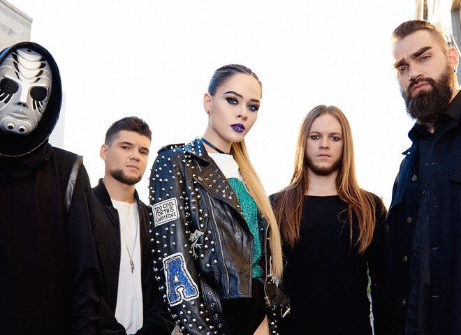

История создания украинской рок-группы началась в 2011 году. Будущей солистке Юлии Саниной на тот момент было всего 18 лет. В роли журналистки девушка работала над новым материалом для статьи, когда встретила музыкального продюсера украинской версии канала MTV Валерия Val Бебко. Вместе они создали поп-проект Val & Sanina и записали первые треки на русском языке.Позже стиль исполнения изменился, а новые композиции были написаны уже на английском. Участники коллектива приняли решение о переименовании путем голосования среди подписчиков аккаунта дуэта в социальной сети «Фейсбук».
Главная особенность композиций не только в тяжелом звучании, но и в сильном, пробирающем до дрожи голосе вокалистки. Дебютные выступления группы в киевском клубе Serebro и на разогреве других коллективов прошли в 2011 году, тогда же был снят первый видеоклип Babylon, благодаря которому исполнители получили популярность. Благодаря признанию среди поклонников и победам в многочисленных конкурсах, с 2013 года стали проходить сольные концерты группы, а годом позже был записан первый студийный альбом Stones and Honey на английском языке.
В 2016 году The Hardkiss участвовали в национальном конкурсе для поездки на «Евровидение». Изначально группа прошла в финал, но по итогам зрительского отбора уступили победу Джамале. В том же году солистка Юлия Санина предстала в жюри седьмого сезона украинской версии шоу «X-фактор».
В 2021-м коллектив отметил 10-летие и пополнил дискографию новым альбомом «Жива і не залізна» («Живая и не железная»). В альбом вошли уже известные песни, на которые были сняты клипы, и 4 новых трека, вновь с экспериментальным звучанием рока, электроники и даже джангла. Работа над альбомом продолжалась в течение двух лет в собственной студии проекта.Юлия и Валерий Val в качестве гитариста стали постоянным составом проекта, другие же музыканты присоединялись временно. Сейчас в состав коллектива, помимо неизменного дуэта, входят бас-гитарист Клим Лысюк и барабанщик Евгений Кибелев. Летом 2021-го музыканты приняли участие в главных фестивалях страны, а осенью отправились в тур в поддержку релиза. В 2022 году в Киеве запланировано грандиозное шоу «Десять».